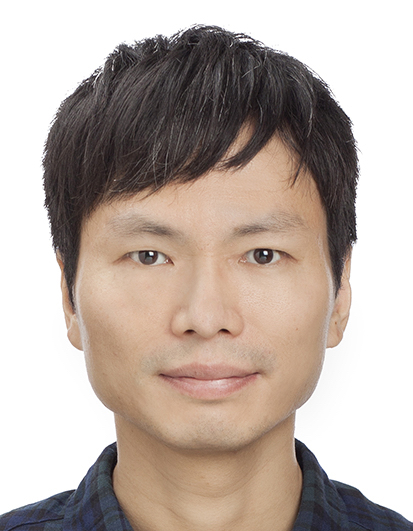

Jihwan Myung
Professor
Jihwan Myung is professor and principal investigator at the Laboratory of Braintime at Taipei Medical University Shuang Ho Hospital. He was born in Seoul, Korea and studied economics, physics, physiology, and life sciences in Seoul, Pohang, Seattle, and Kyoto. He investigates how various scales of time are kept in the brain, specifically in a small network clock called the suprachiasmatic nucleus (SCN). In his publications in 2015, he showed that the SCN network has an asymmetric coupling structure that can modulate the degree of the variance among component clocks, and use this variance to represent information of seasonal day length in addition to time of the day. These works proposed an answer to one of the oldest problems in chronobiology, known as photoperiodic encoding, and provided a new possibility that the network principle governing the seasonal timing is also responsible for the slow adaptation we experience during jet lag.
On-line profile available at Taipei Medical University Academic Hub & Google Scholar.